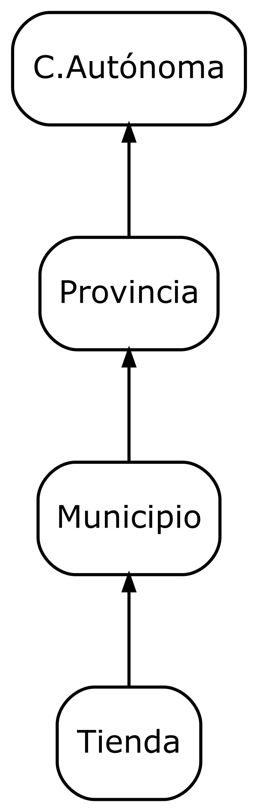
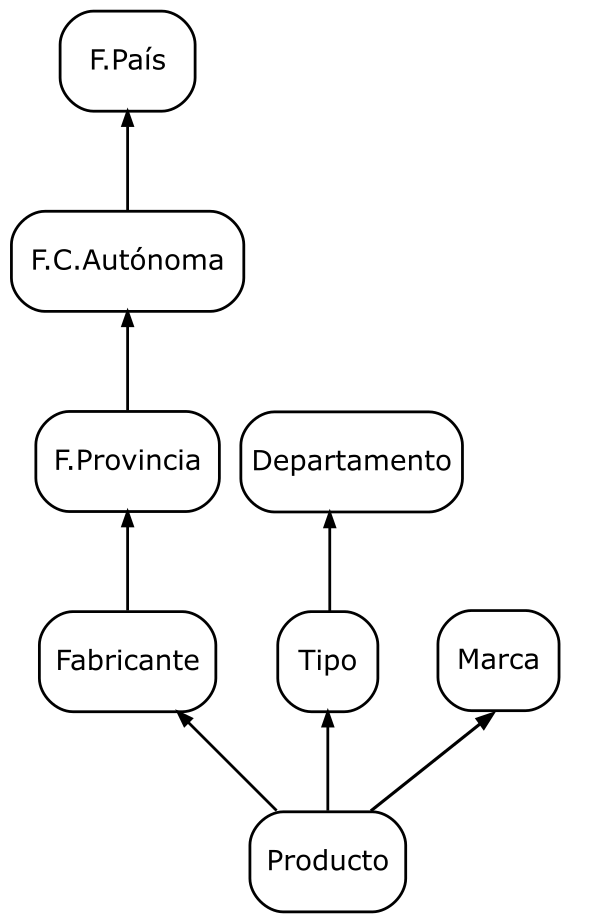
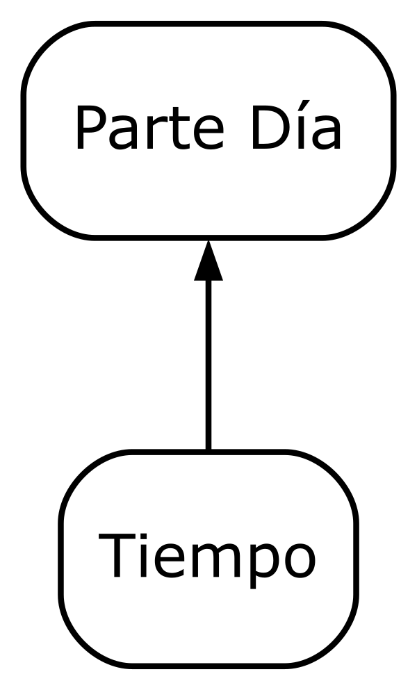

2 Power BI: Esquema Multidimensional
- Vídeo: https://youtu.be/SPXge7dq4Zc
En esta actividad, definiremos elementos del esquema multidimensional en Power BI, centrándonos en la creación de jerarquías en las dimensiones y medidas calculadas, también veremos cómo estructurar informes en páginas interrelacionadas.
El objetivo no es replicar el informe generado en actividades anteriores, sino trabajar de forma independiente. Por ello, comenzaremos desde cero descargando nuevamente el archivo con la base de datos.
2.1 Obtención de los datos
La base de datos necesaria está disponible en:
Descargaremos el archivo:
Power BI OLAP:
ventas_olap.pbix(base de datos OLAP en formato de Power BI).Renombra el archivo con tu nombre de usuario de correo electrónico.
Trabajaremos sobre esta base de datos.
2.2 Ocultar llaves generadas
Para definir el esquema multidimensional en Power BI, es fundamental ocultar las claves primarias y foráneas que se generan automáticamente. Esta no es una operación opcional, sino un paso necesario para mantener la claridad del modelo y facilitar su interpretación, evitando que los usuarios finales vean información técnica irrelevante para el análisis.
2.3 Medidas calculadas
Definimos las siguientes medidas calculadas:
\(Importe = Cantidad * PVP\)
\(PVP_{medio} = \frac{\sum Importe}{\sum Cantidad}\)
2.4 Jerarquías
Las siguientes figuras ilustran las jerarquías que vamos a definir para cada dimensión del modelo:
En la figura 2.1 se muestran las jerarquías correspondientes a la dimensión Cuándo, que nos permitirá organizar la información temporal de manera estructurada.

Figura 2.1: Dimensión Cuándo.
En la figura 2.2 se muestra la jerarquía de la dimensión Dónde, que facilitará la consulta de datos organizados espacialmente.

Figura 2.2: Dimensión Dónde.
En la figura 2.3 se presentan las jerarquías de la dimensión Qué, que permitirá clasificar los datos por categorías o tipos específicos.

Figura 2.3: Dimensión Qué.
Por último, en la figura 2.4 se muestra la jerarquía de la dimensión Hora, que será clave para el análisis a nivel de horas del día.

Figura 2.4: Dimensión Hora.
2.5 Páginas interrelacionadas
Power BI permite la creación de informes compuestos por múltiples páginas, las cuales pueden interrelacionarse entre sí. Esta funcionalidad facilita la navegación entre los datos, permitiendo a los usuarios explorar la información desde diferentes niveles de detalle.
Las páginas que definamos pueden basarse en las jerarquías de las dimensiones.
Ejercicios
Ejercicio: Elementos del esquema multidimensional en Power BI
Todos los apartados siguientes valen igual.
Elementos del esquema:
Uso de los elementos del esquema:
En una página, define un informe que incluya una de las jerarquías definidas.
- Indica el título y niveles de detalle del informe.
Relaciona ese informe con otro informe definido en otra página en el que se muestre otro nivel de detalle.
Se valorará la originalidad de los informes.
Documentación a entregar:
Genera un documento en formato PDF con la estructura siguiente y el contenido que se indica a continuación:
- Elementos del esquema
- Captura de pantalla completa de la aplicación mostrando la columna Datos con todos los elementos desplegados (tantas capturas como sean necesarias para mostrar todos los elementos).
- Uso de los elementos del esquema
- Captura de pantalla completa de la aplicación mostrando el informe original.
- 2 x Captura de pantalla completa de la aplicación mostrando el informe destino (para 2 valores distintos del informe original.
- Elementos del esquema
Antes de realizar las capturas de pantalla:
- Guarda o renombra el archivo Power BI con tu nombre de usuario de correo electrónico.
- Renombra las páginas que contengan los cuadros de mando con tu nombre de usuario como prefijo.